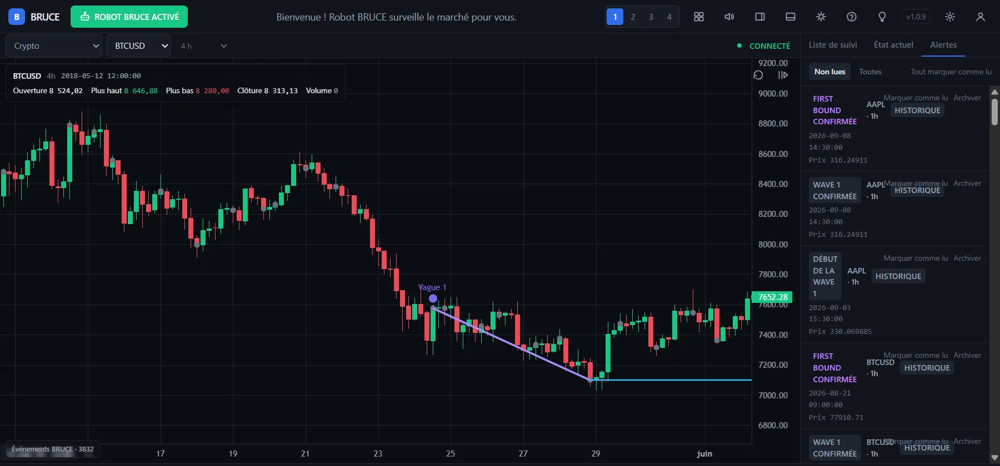
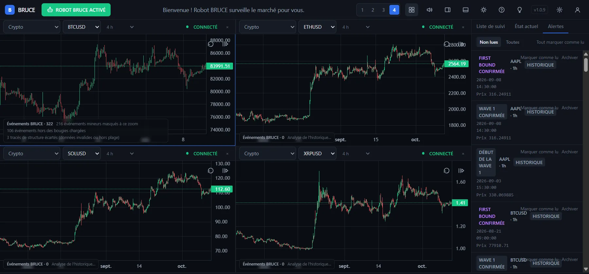
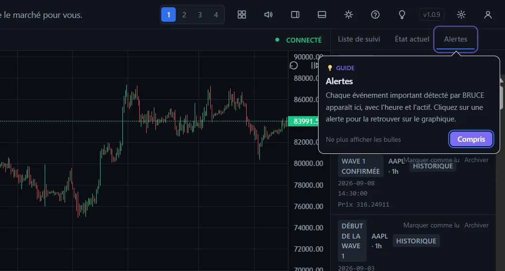
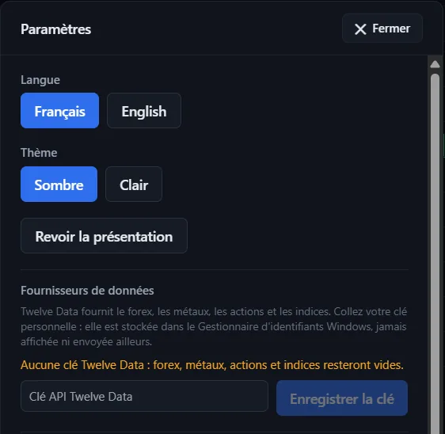

Le robot qui lit la structure du marché pour vous.
Robot BRUCE observe vos graphiques en continu et repère tout seul les vagues, les niveaux de Fibonacci et les changements de régime — puis vous alerte, au bon endroit, sur le graphique.

Une analyse rigoureuse, sans rester collé à l'écran.
BRUCE applique toujours la même méthode, bougie après bougie. Vous voyez ce qu'il a détecté, où et quand — rien n'est inventé : uniquement les vraies bougies du marché.
Vagues détectées automatiquement
Le début et la confirmation de chaque vague sont tracés directement sur le graphique, en couleur, avec leur étiquette.
Fibonacci et niveaux clés
38,2 %, 50 %, 61,8 %, 76,4 % : BRUCE signale chaque niveau atteint, ainsi que les zones First Bound et Second Bound.
Tendance ou RANGE
BRUCE indique si le marché est en tendance ou s'il entre dans un RANGE, pour éviter de forcer une lecture qui n'est plus valable.
Alertes avec son
Chaque événement important arrive dans le centre d'alertes, avec l'heure, l'actif et le prix. Un clic vous emmène à l'endroit exact du graphique.
Des années d'historique
Faites défiler vers la gauche et remontez le temps : l'historique se charge et s'enregistre sur votre PC, puis reste disponible hors ligne.
Jusqu'à 4 graphiques
Surveillez 1, 2, 3 ou 4 marchés à la fois. Glissez les bordures pour agrandir celui qui vous intéresse, fermez les autres d'un clic.

Quatre marchés, un seul coup d'œil.
Pendant que vous regardez le Bitcoin, BRUCE garde un œil sur Ethereum, Solana ou l'euro-dollar.
- Choix rapide : la catégorie, puis l'actif, puis l'unité de temps (1 minute à 1 mois).
- Zoom professionnel : molette, pavé tactile, glisser, double-clic pour recentrer.
- Taille libre : glissez la bordure entre deux graphiques, double-clic pour des parts égales.

Un guide qui vous accompagne là où vous cliquez.
Pas de long tutoriel à valider : quand vous ouvrez un endroit pour la première fois, une petite bulle vous explique à quoi il sert.
- Automatique lors des deux premières ouvertures, puis discret.
- Toujours disponible : l'ampoule en haut de l'écran relance le guide.
- En français ou en anglais, thème sombre ou clair.
Crypto, Forex, or, actions et indices.
Les cryptomonnaies fonctionnent tout de suite, en temps réel. Les autres marchés utilisent votre clé gratuite Twelve Data (voir l'installation).
Temps réel · sans clé
Clé Twelve Data
Clé Twelve Data
Clé Twelve Data
Clé Twelve Data
Prêt en trois minutes.
Aucune connaissance technique nécessaire.
Téléchargez et installez
Cliquez sur « Télécharger pour Windows », ouvrez le fichier Robot-BRUCE-setup.exe puis suivez l'installation.
Créez votre compte
Au premier lancement, choisissez une adresse e-mail et un mot de passe. Votre compte reste sur votre ordinateur.
Ajoutez votre clé (facultatif)
Pour le Forex, l'or, les actions et les indices : créez un compte gratuit sur twelvedata.com, copiez votre clé, puis collez-la dans Paramètres → Fournisseurs de données.

Connexion à votre compte de démonstration
Une prochaine version permettra de relier BRUCE à un compte broker de démonstration, pour s'entraîner sans risquer d'argent réel. Elle arrivera par une simple mise à jour automatique.
Bon à savoir
BRUCE est-il gratuit ?
Oui. La clé Twelve Data pour le Forex, l'or et les actions est elle aussi gratuite (offre de base : 8 demandes par minute et 800 par jour, que BRUCE respecte automatiquement).
Comment se font les mises à jour ?
BRUCE vérifie une fois par jour s'il existe une nouvelle version (ou à la demande dans Paramètres → Rechercher une mise à jour). Elle s'installe par-dessus l'ancienne : vos comptes, vos réglages et votre historique sont conservés.
Où sont mes données ?
Sur votre ordinateur. L'historique des bougies et les détections de BRUCE sont enregistrés localement, avec des sauvegardes automatiques. Votre clé Twelve Data est rangée dans le Gestionnaire d'identifiants de Windows.
BRUCE passe-t-il des ordres à ma place ?
Non. BRUCE analyse et alerte ; c'est vous qui décidez. La future connexion concernera d'abord les comptes de démonstration.
Fonctionne-t-il sur Mac ou sur téléphone ?
Pas encore : BRUCE est aujourd'hui une application pour Windows 10 et 11 (64 bits).
Laissez BRUCE surveiller le marché.
Installez-le en quelques minutes ; les mises à jour suivront toutes seules.
Télécharger Robot BRUCE